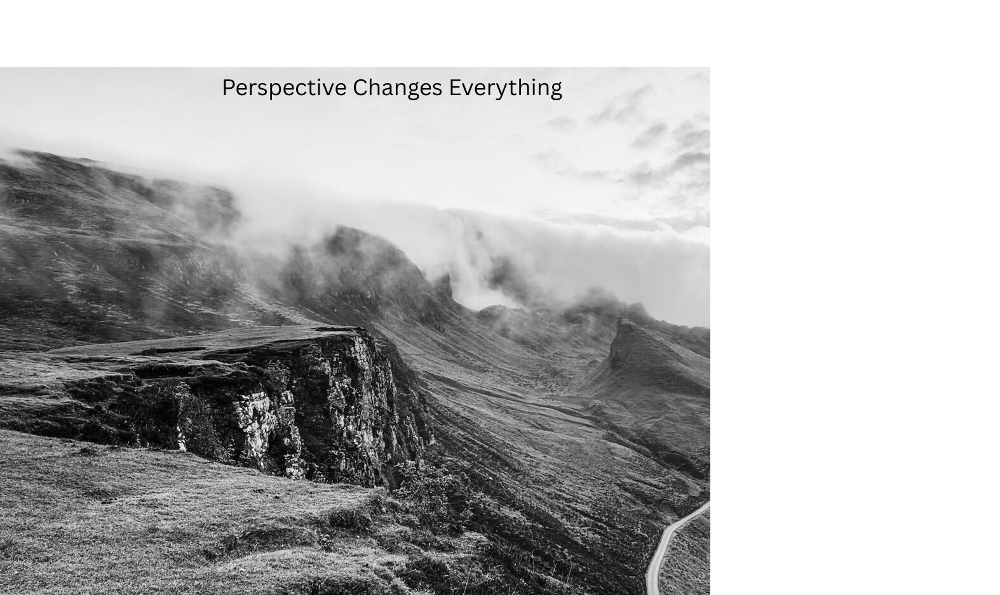

Attribution:
Photo by Aron Visuals on Unsplash
Original image:
https://unsplash.com/photos/1Z2niiBPg5A
For this remix, I added the text "Perspective Changes Everything" and adjusted the colouring of the original image to a monochrome. I chose this image because the landscape naturally suggests perspective and scale, which fit well with the message I wanted to convey. Showing people that you see a black and white picture yet the perceptive of it (what they expect to see) will change everything. Since the image was free to use under Unsplash’s licence, I was able to modify it without restrictions, but I still included attribution to respect the original creator.